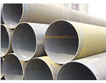

广东Q345b螺旋管 广东X42螺旋管 广东16锰螺旋钢管
广东Q235螺旋焊管规格
Q235螺旋管属于碳素结构钢，主要原料为铁水加废钢，钢中硫、磷含量高于优质碳素结构钢，一般硫≤0.050%，磷≤0.045%。由原料带入钢中的其他合金元素含量，如铬、镍、铜一般不超过0.30%，按成分和性能要求，此类钢的牌号由Q195，Q215A、B，Q235A、B、C、D，Q255A、B，Q275等钢级表示。
注：“Q”是屈服的“屈”字的汉语拼音大写字头，其后数字为该牌号最小屈服点（σs）值，其后的符号是按照该钢杂质元素（硫、磷）含量由高到低并伴随碳、锰元素的变化而分为A、B、C、D四等。
Q235螺旋焊管规格
219-6-8 720*6-8 1220*8-9
245*6-8 820*6-8 1120*10-18
273*6-8 325-9-10 1220*10-18
300*6-8 426*9-10 1320*10-18
325*6-8 478-9-10 1420*10-18
377*6-8 529*9-10 1520*10-18
406*6-8 560*9-10 1620*10-18
426*6-8 630*9-10 1720*12-18
466*6-8 720*9-10 1820*12-18
478*6-8 820*9-10 1920*14-18
529*6-8 920*6-7-10 2020*14-18
560*6-8 1020*7-10 2220*14-18
630*6-8 1120*8-9
广东L245、L290、L360螺旋管力学性能和化学成份
| 钢种 | 力学性能 | 化学成分 | ||||||||
| 屈服强度 | 抗拉强度 | 伸长率 | C | Si | Mn | S | P | |||
| MPa | kg/mm2 | MPa | kg/mm2 | 不大于 | 不大于 | 不大于 | 不大于 | |||
| L245 | 245 | 415 | 21 | 0.26 | 1.15 | 0.030 | 0.030 | |||
| L290 | 290 | 415 | 21 | 0.28 | 1.25 | 0.030 | 0.030 | |||
| L360 | 360 | 460 | 19 | 0.3 | 1.25 | 0.030 | 0.030 | |||
广东螺旋钢管与直缝钢管对比焊接工艺
从焊接工艺而言，螺旋焊管与直缝钢管的焊接方法一致，但直缝焊管不可避免地会有很多的丁字焊缝，因此存在焊接缺陷的机率也大大提高，而且丁字焊缝处的焊接残余应力较大，焊缝金属往往处于三向应力状态，增加了产生裂纹的可能性。
而且，根据埋弧焊的工艺规定，每条焊缝均应有引弧处和熄弧处，但每根直缝焊管在焊接环缝时，无法达到该条件，由此在熄弧处可能有较多的焊接缺陷。
强度特点
管子在承受内压时，通常在管壁上产生两种主要应力，即径向应力δ和轴向应力δ。焊缝处合成应力δ，其中，α为螺旋焊管焊缝的螺旋角。
螺旋焊管焊缝的螺旋角一般为度，因此螺旋焊缝处合成应力是直缝焊管主应力的。在相同工作压力下，同一管径的螺旋焊管比直缝焊管壁厚可减小。
根据以上特点可知：
螺旋焊管发生爆破时，由于焊缝所受正应力与合成应力比较小，爆破口一般不会起源于螺旋焊缝处，其安全性比直缝焊管高。
当螺旋焊缝附近存在与之相平行的缺陷时，由于螺旋焊缝受力较小，故其扩展的危险性不如直焊缝大。
由于径向应力是存在于钢管上的最大应力，所以焊缝处于垂直应力这一方向时承受最大载荷。即直缝承受的载荷最大，环向焊缝承受的载荷最小，螺旋缝介于二者之间。
静压爆破强度
经有关对比试验，验证了螺旋焊管与直缝焊管的屈服压力与爆破压力实测值和理论值基本吻合，偏差接近。但无论是屈服压力还是爆破压力，螺旋焊管均低于直缝焊管。爆破试验还显示出螺旋焊管爆破口的环向变形率明显大于直缝焊管。由此证实，螺旋焊管的塑性变形能力优于直缝焊管，爆破口一般只局限于一个螺距内，这是螺旋焊缝对裂口的扩展起了有力的约束作用所致。
韧性和疲劳强度
管道发展的趋势是大口径、高强度。随着钢管直径的加大、所用钢级的提高，产生韧性断裂尖稳扩展的趋势越大。根据美国有关研究机构的试验表明，螺旋焊管与直缝焊管虽然同为一个级别，但螺旋焊管具有较高的冲击韧性。
输送管线由于输量的变化，在实际操作过程中，钢管是承受随机交变载荷的作用。了解钢管的低循环疲劳强度，对判断管线的使用寿命具有重要的意义。
按测定结果，螺旋焊管的疲劳强度与无缝管和电阻焊管相同，试验的数据与无缝管和电阻管分布在同一区内，而比一般的埋弧直缝焊管要高。
广东Q345b螺旋管 广东X42螺旋管 广东16锰螺旋钢管 天津螺旋钢管厂创办于2001年7月21日，公司生产219-2700X5-25MM的螺旋钢管（防腐螺旋焊管，螺旋管,直缝焊管）本螺旋钢管产品采用美国林肯焊机全线自动双面埋弧焊接，生产的螺旋钢管执行国际GB/T9711.1--1997和石油天然气行业标准SY/T5037-2000,SY/T5040-92进行生产，每一条螺旋钢管生产线配有Ｘ射线，超声波和静水压进行全线自动检测，螺旋钢管广泛应用于自来水工程、石化工业、化学工业、电力工业、农业灌溉、城市建设，是我国九十年代开发的二十个重点产品之一。
螺旋钢管材质为Q235、SS400、16Mn,也可按客户需要自选材质。
公司常年经销＂天津＂宝钢，成都，衡阳，诚德，洪都，鲁宝，无锡，等各大钢厂生产的无缝钢管，现库达＂２０００＂吨以上，百余种规格，是全国规模较大的无缝钢管供应基地，同时企业占地有2000m２室内仓库，3000m2室外库，产品按用户技术要求和有关国家标准组织经营，公司自创办以来，一直坚持“服务第一、质量第一、价格合理、客户至上、服务周到、让利客户、薄利多销为原则，诚实守信为宗旨”的经营理念，管理上坚持以人为本，服务上以客户为尊。
经营范围：方管，矩管，矩形管，方矩管，螺旋管，无缝管，合金管，结构管，高压锅炉管，不锈钢管，化肥专用管，石油裂化管,船舶用管， 流体管等。www.tjljgc.com
地址：河北沧州螺旋钢管生产基地
手机：186-3170-5801 == QQ791117